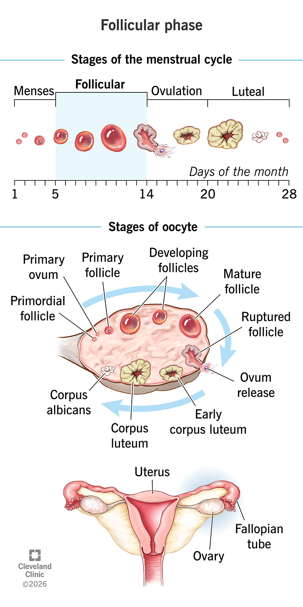
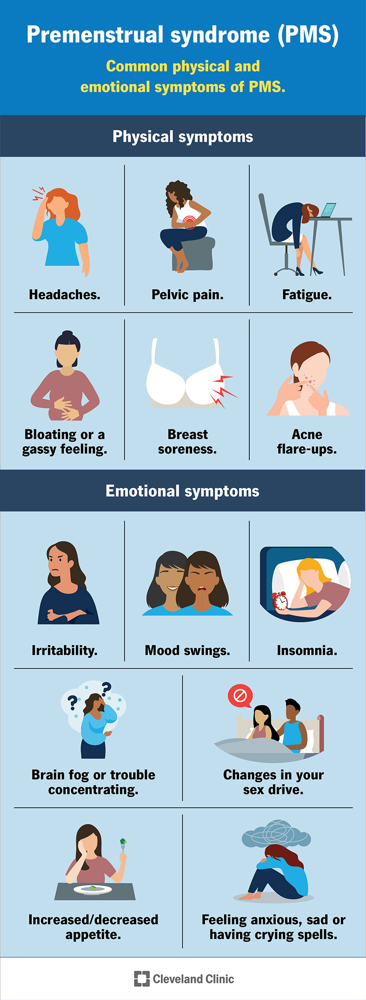
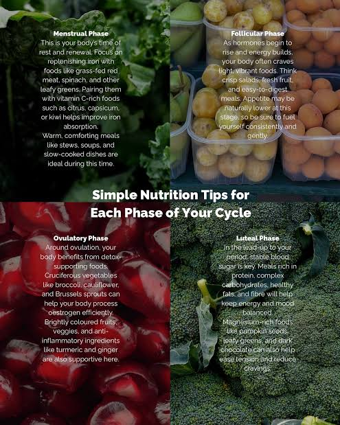

A welcoming space for everyone to learn about women's health, the menstrual cycle, and natural wellness.
Explore helpful information, discover new topics, and learn more about taking care of yourself.
Understanding Your Cycle 🌸
The menstrual cycle is a natural process that involves hormonal changes throughout the month. Learning about your cycle can help you better understand your body. The average cycle is often described as 28 days, but cycle lengths vary from person to person.
Menstruation
Menstrual blood is made up of blood and tissue from the lining of the uterus. It flows from the uterus through the cervix and leaves the body through the vagina as the uterine lining sheds. A period commonly lasts about 3 to 7 days.
Follicular Phase
It’s the time when hormones help an egg mature in one of your ovaries. This egg makes it possible for you to get pregnant.
1
Your pituitary gland releases follicle-stimulating hormone (FSH). This hormone signals your ovaries to start growing follicles, which are tiny sacs that hold eggs.
2
One follicle grows faster than the others. This is called the dominant follicle, and the egg inside it begins to mature.
3
The dominant follicle releases estrogen. This hormone helps thicken the lining of your uterus in case a fertilized egg needs to implant.
4
As estrogen rises, your body makes less FSH. The smaller follicles stop growing, while the egg in the dominant follicle continues to mature.
5
Rising estrogen triggers a surge of luteinizing hormone (LH). This tells the mature egg to leave the ovary, which is called ovulation.
6
The follicular phase ends when ovulation occurs.
7
This phase often lasts around 7–14 days, but the length can vary from person to person.
The Follicular Phase

Follicles grow in the ovary, and one becomes the dominant follicle. This follicle contains the egg that may be released during ovulation.
🌿 Key Things to Remember
The follicular phase length can vary.
FSH helps follicles grow.
Estrogen helps build the uterine lining.
One dominant follicle usually continues maturing.
A surge of LH triggers ovulation.
Ovulation
Ovulation is when an ovary releases an egg. The egg travels down the fallopian tube, where it may be fertilized by sperm. This is the time when pregnancy can begin if sperm fertilizes the egg.
Ovulation predictor kits can detect a rise in luteinizing hormone (LH) in urine. This rise often means ovulation may happen soon, but these kits do not confirm that ovulation has occurred.
Possible Signs and Symptoms
Not everyone notices signs or symptoms around ovulation. Some people may experience:
Tender breasts
Bloating
Pelvic or abdominal pain
Light bleeding or spotting
Changes in sex drive
Changes in the senses of smell, taste, or sight
Mood changes
Appetite changes
These symptoms can happen for different reasons and cannot reliably confirm ovulation on their own.
Luteal Phase
The luteal phase begins after ovulation. The dominant follicle that released an egg changes into a structure called the corpus luteum. The corpus luteum produces progesterone, along with some estrogen.
Progesterone levels rise during this phase and help prepare the uterus for a possible pregnancy:
Thickens the uterine lining: The lining becomes a place where a fertilized egg may implant and begin to develop.
Thickens cervical mucus: Cervical mucus often becomes thicker and more paste-like, which helps protect the reproductive tract.
Vaginal Discharge During the Luteal Phase
Cervical mucus changes throughout the menstrual cycle. Around ovulation, discharge may be wet, slippery, and similar to egg whites. During the luteal phase, it often becomes thicker, drier, or stickier. Discharge varies from person to person, so it cannot confirm your cycle phase on its own.
If pregnancy does not occur, the corpus luteum breaks down and hormone levels fall. The uterine lining then sheds during the next menstrual period.
Important note: Symptoms of the luteal phase can resemble those of premenstrual syndrome (PMS).
PMS refers to physical and emotional symptoms that can begin one to two weeks before a period. Symptoms may include bloating, headaches, tiredness, breast soreness, irritability, mood changes, trouble sleeping, difficulty concentrating, appetite changes, or feeling anxious or sad. They often improve after the period begins and may return around the same time in later cycles.
People experience PMS differently. Some have mild symptoms, while others have symptoms that interfere with daily life. If symptoms are severe or disrupt school, work, relationships, or everyday activities, consider talking with a healthcare professional.

Common physical and emotional symptoms associated with PMS.
Nutrition 🥑
The foods you eat throughout your menstrual cycle can affect how you feel. Choosing a variety of nutrient-rich foods can support your overall health and help you feel more balanced and energized. Hormonal changes may also affect cravings for sweet, salty, or comfort foods. You do not need to avoid your favorite foods, but noticing how different foods make you feel can help you find what works for you.

Ideas for nourishing foods throughout the menstrual cycle. Individual needs and preferences vary.
Nutrients and Foods to Include
Iron-Rich Foods
Menstruation involves blood loss, so eating iron-containing foods can help you meet your body's needs. Try spinach and other dark leafy greens, lentils, beans, poultry, or eggs. Pair plant sources of iron with vitamin C-rich foods, such as citrus fruits or berries, to help your body absorb the iron.
Fatty Fish and Omega-3s
Salmon and other oily fish provide omega-3 fats as part of a balanced eating pattern. If you do not eat fish, walnuts, chia seeds, and flaxseeds provide plant-based omega-3 fats.
Magnesium-Rich Foods
Almonds, pumpkin seeds, beans, leafy greens, and dark chocolate contain magnesium or other useful nutrients. Enjoy a variety of these foods as snacks or part of meals.
Ginger, Turmeric, and Herbal Teas
Ginger is commonly used for nausea and may help some people with menstrual discomfort. Chamomile or peppermint tea can be a comforting drink. Herbs and teas can have side effects or interact with medicines, so natural does not always mean risk-free.
Water and Hydrating Produce
Drink water regularly throughout the day, and include water-rich foods such as watermelon, cucumbers, oranges, and berries. Hydration needs vary with age, activity, weather, and health, so there is no single amount that is right for everyone.
Balanced Meals and Snacks
Combining carbohydrates, protein, fats, and fiber can help make meals satisfying. Try options such as oatmeal with nuts, rice and beans with vegetables, yogurt with fruit, or eggs with whole-grain toast.
Foods You May Want to Limit
Some people notice that certain foods or drinks affect their symptoms. You do not have to completely avoid these foods; consider your own experience and aim for balance.
Very salty packaged foods: Eating a lot of sodium may contribute to water retention or bloating for some people.
Lots of caffeine: Caffeine can affect sleep, anxiety, or headaches in some people. Notice whether coffee, energy drinks, or other caffeinated drinks affect you.
High amounts of added sugar: Sweet foods can still fit into a balanced diet, but meals and snacks with fiber and protein may help keep energy steadier.
Greasy or heavy foods: If these make you feel uncomfortable or upset your stomach, try smaller portions or other foods that feel better to you.
Remember: There is no one perfect diet for every phase of the menstrual cycle. Food cannot guarantee that cramps or PMS will go away, and you do not need to follow strict food rules. If pain, dizziness, or bleeding is severe or interferes with everyday life, talk with a healthcare professional.
Herbs & Teas 🌿
Herbs and herbal teas have been used in food and traditional wellness practices across many cultures. People may explore them for different reasons, but traditional use does not always mean a benefit has been proven by scientific research.
Blue Vervain
What it is: A flowering plant native to parts of North America.
Traditional use: It has been used in some herbal traditions for relaxation and digestive complaints.
Research and safety: Strong clinical evidence for these uses is limited. Side effects, medication interactions, and safety in teenagers have not been well established. Avoid assuming it is safe because it is natural.
Cerasee
What it is: A name used in some regions for bitter plants, including bitter melon (Momordica charantia); common names can refer to different plants.
Traditional use: It is used in Caribbean and other traditional herbal practices.
Research and safety: Research varies by plant part and preparation. Bitter melon may lower blood sugar and can interact with diabetes medicines. Safety in teenagers, especially in concentrated herbal products, is not well established. Confirm the exact botanical identity before discussing specific effects.
Damiana
What it is: A shrub native to parts of the Americas, including Mexico, Central America, and the Caribbean.
Traditional use: Its leaves have been used in traditional preparations associated with relaxation and reproductive wellness.
Research and safety: Reliable human evidence for many claimed benefits is limited. Safety information, possible medication interactions, and safety for teenagers are insufficient. Do not treat traditional use as proof that it improves fertility or hormones.
Guaco Leaf
What it is: “Guaco” is a common name for several tropical climbing plants, including species in the Mikania genus, found in parts of Central and South America and the Caribbean.
Traditional use: Some communities have used guaco preparations in traditional practices related to respiratory wellness.
Research and safety: Evidence from high-quality human studies is limited, and products may contain different species or preparations. Side effects, interactions, and safety for teenagers are not sufficiently established. Confirm the exact plant species before relying on claims about it.
Guinea Henweed
What it is: A tropical plant known by several common names and used in some Caribbean and other folk-herbal traditions.
Traditional use: It has been used in folk medicine for a range of purposes, but uses differ by community.
Research and safety: Scientific evidence supporting many claimed benefits is limited. Reliable information about side effects, medication interactions, and safety in teenagers is lacking. The plant's identity and the preparation matter.
Contribo
What it is: “Contribo” is a regional common name that may refer to different tropical plants; the exact botanical identity should be confirmed from a trustworthy label or botanical source.
Traditional use: Reported uses can vary by region and by which plant is meant.
Research and safety: Without confirming the species, it is not possible to accurately summarize research, side effects, or medication interactions. Safety for teenagers has not been established from the name alone.
Questions to Ask When Researching an Herb
What is the plant's scientific name, and where does it grow?
How have different cultures traditionally used it?
What do well-designed scientific studies say about its potential benefits?
What side effects and medication interactions are known?
Has its safety been studied in teenagers?
Safety reminder: Herbal products are not automatically safe because they are natural. Research on an herb may be limited, and safety for teenagers may not have been studied. Products marketed for fertility, hormonal conditions, or contraception should not be presented as proven treatments or reliable birth-control methods without strong scientific evidence. If you are considering an herbal product, especially for menstrual concerns, fertility, or hormones, ask a qualified healthcare professional or pharmacist about safety and possible interactions.
Vitamins & Minerals 🍊
Vitamins and minerals help your body grow, use energy, and carry out important everyday functions. A varied diet is a good place to start, and supplements are not necessary for everyone.
B Vitamins
B vitamins help the body use energy from food and support functions such as making red blood cells and keeping the nervous system working. Three important examples are vitamin B6, vitamin B12, and folate (vitamin B9, also called folic acid in supplements and fortified foods).
Vitamin B6
Vitamin B6, also called pyridoxine, supports brain development, the nervous system, and protein metabolism. Food sources include fish, potatoes, chickpeas, avocados, bananas, beans, fortified cereals, meat, oatmeal, and poultry. Very high amounts from supplements taken over time can cause nerve damage, so avoid taking high-dose supplements unless a healthcare professional recommends them.
Vitamin B12
Vitamin B12 helps the nervous system function and helps the body make red blood cells and DNA. It is found naturally in foods such as fish, meat, eggs, milk, cheese, and yogurt; some cereals and plant-based foods are fortified with B12. People who eat vegan diets may need fortified foods or a supplement. Anyone concerned about low B12, anemia, or absorption should ask a healthcare professional for advice.
Folate (Vitamin B9)
Folate supports cell growth and the formation of DNA and red blood cells. Sources include leafy green vegetables, beans, peas, citrus fruits, and fortified grains. Folic acid is a form of folate used in supplements and fortified foods. People who could become pregnant are advised to discuss folic acid needs with a healthcare professional because it helps prevent certain birth defects early in pregnancy.
Vitamin C
Vitamin C, also known as ascorbic acid, helps the body make collagen, supports wound healing, improves absorption of iron from plant foods, and supports normal immune function. Food sources include oranges and other citrus fruits, strawberries, kiwi, bell peppers, tomatoes, and broccoli. Most people can get enough vitamin C from a varied diet; high-dose supplements are not a substitute for balanced nutrition.
Omega-3s and Fish Oil
Omega-3 fatty acids are found in foods such as salmon, sardines, and other oily fish. Fish oil supplements provide some omega-3s, including EPA and DHA, while algae-based products can provide DHA for people who do not eat fish. Eating fish as part of a balanced diet can be a way to get omega-3s, but supplements are not necessary for everyone.
Prescription omega-3 products can lower high triglyceride levels, but over-the-counter fish oil should not be treated as a proven way to prevent dementia, Alzheimer's disease, or heart disease. Supplements can interact with medicines and may not be suitable for everyone, so ask a healthcare professional before using them.
Prebiotics
Prebiotics are types of fiber that certain helpful gut microbes can use as food. They occur naturally in foods such as onions, garlic, beans, oats, asparagus, and other plant foods. Some supplements contain ingredients such as inulin or fructooligosaccharides (FOS). Increasing fiber gradually and drinking enough fluids may help reduce gas or bloating as your body adjusts.
Probiotics
Probiotics are live microorganisms that may provide a health benefit in specific situations. Effects depend on the particular strain and the reason it is being used, so one probiotic product will not work the same way for every person or condition. Research results vary, and probiotics are not recommended for every digestive concern.
Foods such as yogurt with live cultures and some fermented foods may contain live microorganisms. If you are considering a probiotic supplement—especially if you have a health condition or take medicines—ask a healthcare professional for guidance. Eating a variety of fiber-rich plant foods can also help support gut health.
Safety reminder: More vitamins or supplements do not automatically mean better health. Supplements can cause side effects, interact with medicines, or provide too much of a nutrient. Food needs vary by age, diet, and health, so talk with a healthcare professional or registered dietitian if you are worried about a deficiency or considering a supplement.
Understanding Birth Control 💗
Birth control includes different methods people may use to prevent pregnancy. The best choice depends on a person's health, preferences, access, and needs. This section shares educational information so visitors can learn about both medical options and traditional herbal practices while understanding the limits of the evidence.
Medical Birth-Control Options
Established options include external and internal condoms, birth-control pills, patches, vaginal rings, injections, implants, and intrauterine devices (IUDs). Different methods have different levels of effectiveness, possible side effects, and health considerations. Condoms also help reduce the risk of many sexually transmitted infections (STIs).
Some herbal traditions discuss plants such as black cohosh, blue cohosh, mugwort, dong quai, and Guinea henweed (also called anamu) in connection with menstrual or reproductive health. People may describe using herbs at particular points in the cycle or before intercourse, but these traditional practices have not been shown to provide reliable contraception.
Black Cohosh
Black cohosh is an herb studied mainly for certain menopause-related symptoms. Evidence for many other uses is limited, and it is not a proven method of birth control. It may cause side effects and has been linked to rare but serious liver problems.
Blue Cohosh
Blue cohosh has a history of use in some traditional reproductive practices, but it can be toxic and may cause serious adverse effects. It should not be presented as a safe contraceptive or used to try to affect pregnancy.
Mugwort
Mugwort has been used in different traditional practices, but there is not reliable evidence that it prevents pregnancy. It can cause allergic reactions in some people, and its safety during pregnancy is uncertain.
Dong Quai
Dong quai is used in some traditional practices related to menstrual health. Evidence for many claimed benefits is limited, and it is not a proven contraceptive. It may interact with medicines, including blood-thinning medicines, and should not be assumed safe for everyone.
Guinea Henweed (Anamu)
Guinea henweed, also called anamu in some regions, is used in certain folk-herbal traditions. Claims that it supports fertility management, raises iron levels, cleanses blood, removes toxins, supports urinary health, treats tumors, or prevents implantation are not established medical benefits. Reliable evidence that it prevents pregnancy is lacking, and its safety and interactions are not well established.
Important contraception and safety note: Cycle tracking and timing herbs around ovulation or before intercourse cannot reliably prevent pregnancy. Ovulation timing varies, and there is no good evidence that Guinea henweed or the other herbs listed here prevent implantation or work as contraception. A 28-day cycle is only an example, and cycle days alone cannot confirm when ovulation occurs. Do not rely on herbs as birth control or use them during pregnancy. Some herbs can cause serious side effects or interact with medicines. If avoiding pregnancy is important to you, a qualified healthcare professional can discuss options without pressuring you to choose a method you do not want.
Helpful Resources 📚
Continue learning with reliable health information from trusted medical and educational organizations.
A herbal wellness business offering herbs, teas, and botanical products. This is a business I personally purchase from and wanted to share with visitors interested in exploring herbal wellness products. Sharing this resource is based on my personal experience and is not a medical endorsement of its products.